VisLies 2017 Gallery
October 3, 2017
It was a late start this year with an unscheduled room change and several simultaneous events. Attendance was a little lighter than previous years, but we still had a great event with a lot of fun.
Here is a recap of VisLies this year.
Rock You Like a Hurricane
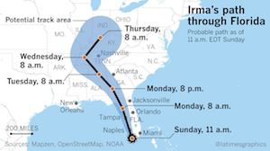After a brief introduction by Georges Grinstein, Bernice Rogowitz started us off with a vis lies story that hits close to home, literally. Bernice's mother lives on the east coast of Florida, so as hurricane Irma made its way to landfall in earl September, 2017, both Bernice and her mother were closely following reports on the predicted paths of Irma. Predicting the path of a hurricane is of course fraught with uncertainties, and so such reports usually show the predicted path and some representation of possible variations on that path like the one shown here. By the time Irma reached the U.S., the predictions solidly placed the path of Irma to hit the West coast of Florida and continue on up the West coast. Informed by the visualization here, Bernice's mother chose not to evacuate as it became clear the hurricane was likely to hit the West coast, not the East coast.
In one, the predictions were dead on. Irma did in fact hit the West coast of Florida and then followed the coast North. However, there is a flaw in this visualization that proved dangerously misleading for many Florida residents. The visualization is showing the 1 dimentional path the center of the hurricane is following. The envelope around the path shows the range of area the hurricane's center is likely to pass. The natural assumption is that anyone outside of this envelope is safe from the devistating effects of the hurricane. This idea is reinforced in the above visualization by a small hurricane icon at the base of the path.
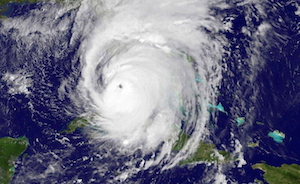However, the danger of a hurricane does not lie solely at its center. Hurricanes are big. In fact, the width of hurricane Irma was wider than Florida. This satelite image shows Irma right before landfall in Florida, and it covers the entire width. Although Irma was centered on the West coast, its devistating effects were felt coast to coast.
This exposes the problem with the aforementioned visualization. The visualization shows the center path of the hurricane, but the salient information for residents and decision makers is the areas likely to be in danger. The visualization implies the latter but presents the former, causing people to make ill-informed decisions.
Cherry-Picked Climate
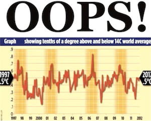Bernice next showed us this graph on climate change that has been in circulation for several years. The graph shows the average global temperature over a course of 15 years (1997–2012). The graph seems to invalidate claims that global temperatures are rising.
The plot looks legit, and the data behind it are in fact accurate. But there is a problem with this graph. It is cherry picking data. That is, this graph is showing a subset of available data that supports a desired conclusion and is throwing away data that does not support that conclusion.
In the grand scheme of things, 15 years is not very long. What happens if we expand the time frame.
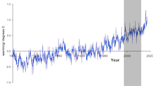This second graph expands the data from 1900 to 2017. The shorter 15 year period from the first graph is hilighted in the gray box. As you can see, if we choose to look only at that specific 15 year period, the average global temperature did hold steady. But the decades before this region saw a noticible average increase in temperature and the years following this region also show rising temperature. When shown in a larger context, the time frame from 1997–2012 does not accurately represent the larger trend.
Plague of Wyorado
{kind=link}
Claire Lauer showed us this interesting specimen from USA Today. The title states the map shows the trafficking of marijuana from Colorado to other states. The data, however, is immediately suspect. For starters, the highlighted state is Wyoming, not Colorado. We can't help but wonder what other mistakes passed through quality control. (Is Colorado's neighbor, New Mexico, really immune?)
Even ignoring the glaring (and possibly less obvious) factual mistakes, the graphic is inscrutable about the meaning of the elements. The legend is incomplete. The blue means states with Colorado marijuana (with marijuana spelled wrong, naturally). The gray color is undefined. I guess it means those with no marijuana? Or no reported marijuana? Or an amount under a certain threshold? More importantly, there is no context about the underlying data. Which states have more and which have less? Instead, the graph blankets the majority of the U.S. with, uh, Wyorado marjijuana. A single insignficant incidence could be blanketing the whole state.
And what do the arrows mean? They are reminicent of migratory patterns. But why do drug smugglers hop over Nevada to get to California? How do states like Arkansas get their source when all arrows skip over them? The answers of course are that the arrows are essentially meaningless.
Uneven Scales
{kind=link}
{kind=link}
Claire's next example comes from a series of graphs produced by a CBS/60 Minutes poll on perceptions of sports. The results of the poll were all presented next to each other, but none of them have the same scale. Consider, for example, these two images. One naturally compares the bars in the two plots, but they are at very different scales. Visually it appears that as many people think football is populated by jerks as find football enjoyable (perhaps in a 50/50 split). However, closer inspection reveals that the the actual numbers show that about twice as many people responded that football is enjoyable as responded football has the most jerks. Although this particular example is probably inconsequential, this inconsistency in scaling is common.
{kind=link}
Treacherous Title
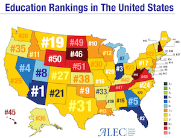This following example provided by Claire demonstrates how the phrasing of a title can completely change the interpretation. As an example, consider this visualization labeled "Education Rankings in the United States." The natural assumption is that an education ranking has something to do with how well students perform. But note that no details on how these measures or rankings were determined. In fact, the rankings have nothing to do with student performance.
In truth, these rankings come from a report from the American Legislative Exchange Council (ALEC). A closer inspection of the report reveals that the ranking criteria are "based on six factors: state academic standards, charter schools, homeschool regulation burden, private school choice, teacher quality, and digital learning" (with double weight for charter schools and private school choice). Note that none of these rankings make any attempt at measuring how well students are learning. (Although "state academic standards" sounds like it is measuring student performance, it is really only comparing state standards to fedral standards. A state adopting federal standards would do well in this metric even if all its students were failing.)
So an extreme vagueness in the title along with an intentional misdirection makes for a completely dishonest data graph. Arizona might be #1 is some arbitrary metric of private school availability, but it has no relevance on whether children actually get educated.
Info-ish Graphic
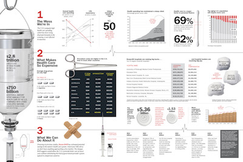Claire also showed talked about the recent trend of large infographic displays that combine many visualizations together in a larger format to discuss a bigger issue. This example from Time magazine highlights many issues of the U.S. health care system. The infographic has garnered much praise on the web including a Kantar Information is Beautiful Award.
The topic is certainly consequential, the data are (I presume) correct, and the visuals are definitely engaging. But considering how much work must have gone into making this infographics, it is suprising just how inaccurate, misleading, or unhelpful so many of the visualization elements are. Let us go through and examine a few of these many misleading graphical elements.
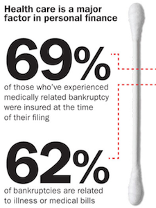First, let us look at the cotton swab used as an axis to compare numbers on personal finance. As items go, a cotton swab works reasonably well to show the scale of an axis; its long, straight, and has definitive ends.
The problem is that the numbers, 69 and 62, are not accurately plotted on a range from 0 to 100%. They are about 7% off, which is weird. It's not hard to measure distances in graphics editors.
But perhaps the errors do not matter so much as the comparison between these two numbers seems to have little value. They are both percentages and they both have bankruptcy in their name, but would it be more or less alarming if more bankruptcies were caused by medical bills than the percentage of those who were insured when bankrupt?
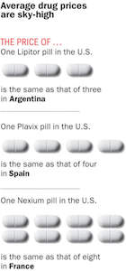Moving elsewhere, take a look at this display of pills. The pills represent metaphorically how much equivalent medication we can get it in foreign countries.
What is odd about this display is that it does not address the disparity of medication cost between the U.S. and other countries in general. Instead, it picks three specific instances of Lipitor in Argentina, Plavix in Spain, and Nexium in France. The display invites us to infer from these specific instances to a general comparison of drug prices. But what is there about Lipitor, Plavix, or Nexium that makes it representative of drug costs? Or what is there about Argentina, Spain, or France that is indicitive about other countries. Of course, there is no such valid generalization. Rather, the data are cherry picked to make a particular point.
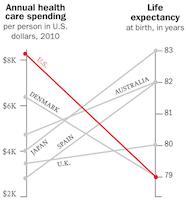Cherry picking happens elsewhere as well. Consider this parallel-coordinates plot near the top of the display. Putting aside some concerns about the scaling of the axis (do baselines of $2K and 79 years make sense?) there are remarkably few countries listed here. Why pick these specific countries when these statistics are readily available for many nations? Why include the U.K. here and not anywhere else in the entire graphic. Although the U.S. may spend the most per capita on health care, our life expectancy is far from the worst in the world.
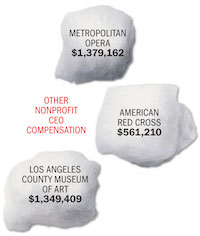The infographic also contains visual elements that are either missleading or seem to represent nothing at all. Take, for example, these CEO salaries encased in pictures of cotton balls. The choice of shape is not metaphorical for anything; the numbers are for CEOs that are not in healthcare. Each cotton ball is of a unique shape and slightly different size, but neither is proportional to the numbers they represent. You could stare at this for hours (like Claire) and still be stymied about what the shape could possibly mean (like Claire).
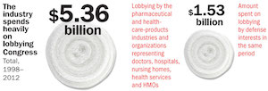This image of rolled up gauze (that's what those swirly circle shapes are) is equally confusing. As we've said before, using area to represent values is always problematic, but even so these proportions make no sense. The left gauze is certainly not visibly 5x larger than the right. But even if you measure the area the proportions do not match up. Why spend time adjusting images and sizes if they don't match up with the numbers?
But perhaps the strangest design decision is this graphic using an IV bottle to demonstrate relative spending. The bottle volume represents the total health care spending in the U.S., and the filled liquid part represents how much more the U.S. spends than other countaries (on average? summed?).
If you look close, you may notice that the numbers don't match up to the height of the liquid. According to the numbers, the liquid part should fill about a quarter of the jar. If you think it looks more full than that, you would be right. By my measurements it is over 40% full.
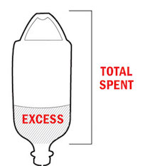The explenation of this discrepancy is found in this small legend at the bottom of the graphic. Why do you need a legend to explain how to read liquid in a jar? Because the measurement is supposed to include the empty space in the handle.
The handle? That's just weird. And non-intuitive. No one casually looking at the graphic would include the space outside the jar and in the handle. In fact, the idea breaks the visual metaphor so badly that even after being conciously aware you are supposed to include that space, it is difficult to mentally adjust to consider a wire loop to contain space in the jar. It inevitably leads viewers to overestimate the quantity representing the amount the U.S. pays more than other countries.
Student Examples: Lake Mead Water Levels
All professors love harrassing their students for their own enjoyment, and Claire is no exception. She tasked her students to take data sets and provide creative visual representations that display correct values for the data but use misleading visual representations. The first such data set is the historical levels of water in Lake Mead, which has critical consequences because the Lake Mead reservoir is a major water source for multiple states.
An accurate representation of this data is provided by the U.S. Bureau of Reclamation. Before getting to the lies about this representation, there are some interesting features to point out. First, the "minimum" level of the reservoir is 895 feet. Anything bellow that is "dead storage" because below that point water can no longer be consumed from the reservoir. Likewise, the maximum level of the reservoir is 1229 feet. The reservoir cannot hold more water than that. So the valid ranges to consider for the reservoir water level are between these two numbers. Anything significantly narrower or wider than that range is either exaggerating or diminishing perceived changes. (Note that we at VisLies often setting a 0 baseline for graphs. Although 0 is often the correct baseline, in this case it is wrong as 0 ft and 800 ft have the same "we have no water we are totally screwed" meaning.)
The second feature to note is that Lake Mead water levels were high for decades up to about 2000 when droughts caused the water level to steadily drop (with some relief from heavy rains in the early 2010's).
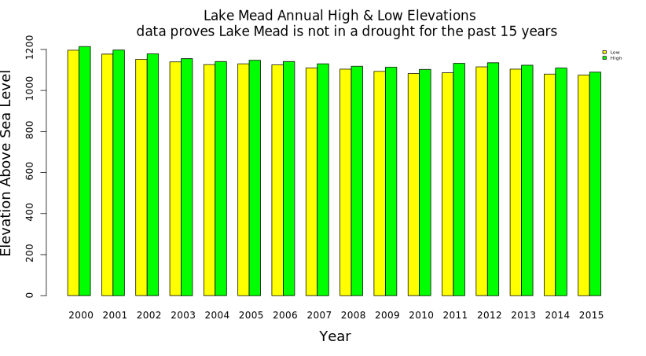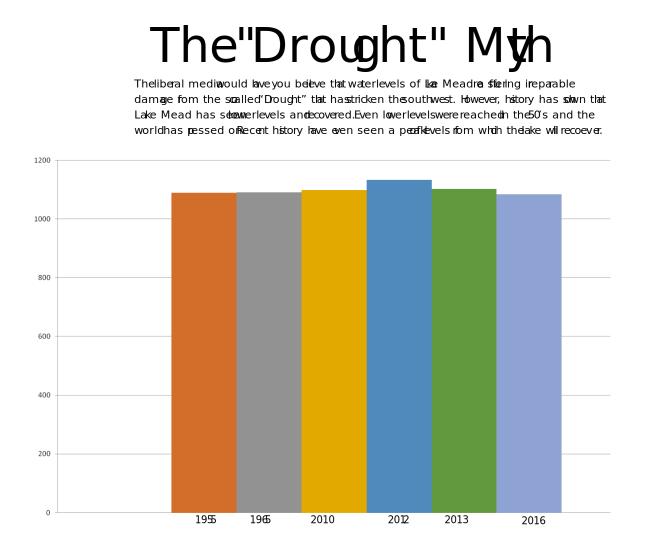This first pair of images using scaling to hide the variations in reservoir level. The both scale the data from 0 ft to 1200 ft, which, as we stated before, over half of that region is dead space. Additionally, the image at right also cherry picks the data to further reduce any drought effects. The text at top ridiculing the notion of a drought is a nice touch to further reinforce the notion that reservoir levels are holding steady when they are not.
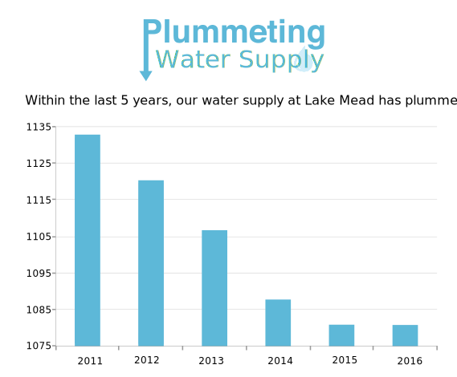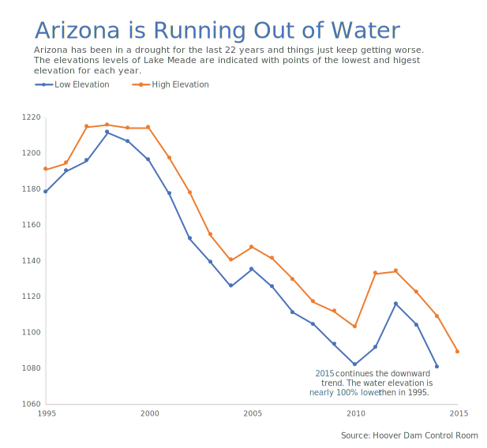This next pair of images narrow the scale to achieve the opposite effect: exaggerate the effects of the drought. From the look of these images, it looks like the reservior has already run dry. The left image exaggerates this even more by cherry picking a narrow range of almost constant decline. (The logo at the top is also fun.) The right image reinforces the decline with the text in the lower right (including some funny math about how much the water level has dropped).
Student Examples: The Graffiti Scourge
Claire also provided a second data set for her students to lie about. The second data set is some statistics about graffiti incidents reported in Tempe, AZ. The data show the number of reported graffiti incidents broken down by the type of location at which they occur.
These first two examples are interesting because they each present the data in a way that seems to demonstrate a different target of graffiti taggers. The left graphic "shows" that graffiti hits private property the hardest; incidences on private property are more numerous than any other category. But, if you look closer you might notice that all other categories fall into a more general public property category. The only reason why private property appears to be a bigger issue than public property is that public property is being split up into many smaller categories whereas private property is not. If you added up all the public property bars, they would be much higher than the private property.
The graphic on the right "demonstrates" that public transportation services are being targeted hard by graffiti. However, this data is cherry picked. It is comparing transportation to only 3 other categories, specifically chosen because their incidences are so low.
Total Eclipse of the Rainbow
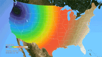Ken Moreland presented this animated map of the 2017 total solar eclipse from an article in the New York Times. This map features one of VisLies' favorite features to lambaste: the rainbow color map. Using rainbow hues to represent data items is well known for its poor perceptional representations. In short, understanding what numbers each color is meant to represent is difficult to follow, particularly in an animation like this. Try focusing on a particular part of this map and try to follow the progression of sun coverage. (For detailed descriptions on the problematic aspects of rainbow colors and alternatives, there are several good descriptions such as from medvis.org, EGU Blogs, Mathworks, and EagerEyes.)
To be fair, this colors used here are not strictly rainbow colors. The ends are changed so that the 0% end of the scale (total eclipse) is set to black and the 100% end of the scale (no eclipse) is set to white. Those are good colors to represent total darkness and lightness. However, there is one glaring issue with the implementation of these colors. The black does not simply represent no light. The black color is interpolated to blue at about 10% light. This means that the black bleeds significantly beyond the border of total eclipse, making it seem like a much bigger swath of land than it actually covers. This map makes it seem like the total eclipse covered entire states like Oregon when in fact the actual band of total eclipse was much more narrow.
There are lots of better examples of eclipse maps. This map from accuweather makes much better use of color in a static display to give a very clear indication of eclipse coverage. The newpaper article in question was about the movement of the eclipse, so an animation is appropriate. This animation from NASA provides a much more accurate (and more attractive) display.
{kind=link}